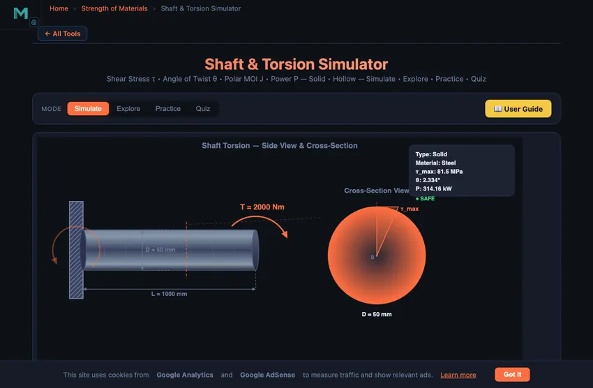

Shaft Torsion Calculator
Shear Stress τ • Angle of Twist θ • Polar MOI J • Power P — Solid • Hollow — Simulate • Explore • Practice • Quiz
3D Model — Component Design: Transmission Shafts & Keys
Interactive 3D model of this apparatus. Pick a component on the right, then drag to rotate · scroll to zoom · right-drag to pan.
1 Overview
The Shaft Torsion Simulator analyses circular shafts under applied torque. It calculates maximum shear stress (τmax), angle of twist (θ), polar moment of inertia (J), and transmitted power (P) for both solid and hollow shafts. The governing relationship is T/J = τ/r = Gθ/L, connecting torque, geometry, stress, and deformation in one elegant equation.
The simulator supports three materials (Steel G = 80 GPa, Aluminium G = 26 GPa, Copper G = 45 GPa) and provides animated twist visualisation with a colour-mapped cross-section showing the linear shear stress distribution from zero at the centre to maximum at the outer surface.
2 Setting Up the Load Case
The simulator opens in Simulate mode with a solid steel shaft (50 mm outer diameter, 1000 mm length, 2000 N·m torque, 1500 RPM). The canvas shows the shaft with torque arrows, twist deformation lines, and a cross-section view. Readout badges above the canvas display τmax, θ, J, and Power in real time.
Try the Presets (Drive Shaft, Hollow Axle, Motor Shaft, Propeller Shaft) to quickly load common engineering configurations. Each preset sets the shaft type, dimensions, torque, and RPM to realistic values. Then fine-tune any parameter using the sliders.
3 Building the Diagrams
Select Shaft Type: Solid or Hollow. For hollow shafts, an additional Inner Diameter slider appears. Choose a Material to set the shear modulus G. Then adjust sliders for Outer Diameter (10–200 mm), Inner Diameter (hollow only), Length (100–2000 mm), Torque (0–5000 N·m), and RPM (0–3000).
The key formulas computed are: τmax = T·r/J (maximum shear stress at the outer surface), θ = TL/(GJ) (angle of twist in radians, displayed in degrees), J = πD4/32 for solid shafts or π(Do4 − Di4)/32 for hollow shafts, and P = 2πNT/60 (power in watts). The readout grid shows all computed values plus shaft weight.
Watch how removing material from the centre (going from solid to hollow) barely reduces J but significantly reduces weight — this is why hollow shafts are preferred in aerospace and automotive applications.
4 Reading the Theory
Explore mode offers 12 torsion concepts across three categories: Torsion Theory (the torsion formula, shear stress distribution, angle of twist equation), Cross Sections (solid vs hollow, polar moment of inertia comparisons), and Applications (power transmission, material selection, shaft design criteria).
Each concept includes a detailed text explanation paired with an animated diagram on the canvas. Study these before attempting Practice and Quiz modes to ensure you understand the underlying theory.
5 Try a Problem
Practice mode generates random torsion problems — for example, “Calculate τmax for a 40 mm solid steel shaft under 1200 N·m torque.” Type your answer, click Check, and see instant feedback with step-by-step solutions. Your running score is tracked.
Quiz mode presents 5 questions per session including both multiple-choice and numeric formats. Questions cover shear stress calculation, angle of twist, polar MOI, power-torque-RPM relationships, and solid-vs-hollow comparisons. Your final score and detailed review are shown at the end.
6 Design Notes
- The torsion formula T/J = τ/r = Gθ/L connects everything. Memorise it and you can derive any other torsion relationship.
- Shear stress varies linearly from zero at the centre to maximum at the surface. The core material near the centre carries almost no stress.
- A hollow shaft with Di/Do = 0.8 retains about 59% of the solid shaft’s J but weighs only 36% as much — a major weight saving.
- Power = Torque × Angular Velocity. If you know the power and RPM, find the torque: T = 60P/(2πN).
- Steel (G = 80 GPa) twists about 3× less than aluminium (G = 26 GPa) under the same torque and dimensions.
- Check that the angle of twist is within acceptable limits (typically < 1° per metre of shaft length) for precision applications.
- Compare the Propeller Shaft preset (hollow) with the Motor Shaft preset (solid) to see the weight-to-strength trade-off in action.
Shaft Torsion Simulator — Understanding Shear Stress, Angle of Twist and Power Transmission

A shaft is one of the most fundamental mechanical components, responsible for transmitting rotary motion and torque from one machine element to another. When a torque (twisting moment) is applied to a shaft, the shaft experiences torsion — a state of stress that develops internally to resist the external twisting action. Understanding torsion is essential for every mechanical engineer, as it directly governs shaft sizing, material selection, and the safe operating limits of rotating machinery such as motors, turbines, gearboxes, and vehicle drivetrains.
The Torsion Formula and Shear Stress Distribution
The fundamental torsion equation relates the maximum shear stress (τmax) developed on the surface of a circular shaft to the applied torque (T), the shaft radius (r), and the polar moment of inertia (J): τmax = T × r / J. A critically important property of torsion in circular shafts is that shear stress varies linearly from zero at the centre of the cross-section to a maximum at the outer surface. This linear distribution means the core material near the centre carries very little stress, which is why hollow shafts can be an efficient alternative to solid shafts — they remove unstressed material from the centre, reducing weight without significantly reducing strength.
Angle of Twist
When a torque is applied along the length of a shaft, one end rotates relative to the other. The angle of twist (θ) is calculated using the formula: θ = T × L / (G × J), where L is the shaft length and G is the shear modulus (modulus of rigidity) of the material. The angle of twist is a critical design parameter because excessive twisting can cause misalignment in coupled machinery, vibration, and fatigue failure. For example, a drive shaft in an automobile must have an angle of twist well within acceptable limits to ensure smooth power delivery.
Polar Moment of Inertia for Solid and Hollow Shafts
The polar moment of inertia (J) is a geometric property of the cross-section that quantifies its resistance to torsional deformation. For a solid circular shaft: J = πD4 / 32. For a hollow shaft with outer diameter Do and inner diameter Di: J = π(Do4 − Di4) / 32. A hollow shaft with the same outer diameter as a solid shaft has a slightly lower J but significantly lower weight, making it the preferred choice in aerospace, automotive, and structural applications where the weight-to-strength ratio is critical.
Power Transmission and Shaft Design
Shafts are primarily used to transmit power from a prime mover (motor, engine, turbine) to a driven machine. The relationship between power (P), torque (T), and rotational speed (N in RPM) is: P = 2πNT / 60. This formula allows engineers to determine the required torque for a given power and speed, which then feeds into the torsion formula to calculate the necessary shaft diameter. Shaft design must also consider factors such as keyways, stress concentrations, fatigue loading, and critical speeds. Common engineering materials include carbon steel (G ≈ 80 GPa), aluminium alloys (G ≈ 26 GPa), and copper alloys (G ≈ 45 GPa), each offering different trade-offs between strength, weight, corrosion resistance, and cost.
How to Use This Simulator
In Simulate mode, select a shaft type (Solid or Hollow), choose a material, and adjust the sliders for diameter, length, torque, and RPM. The animated canvas shows the shaft with torque arrows, twist deformation lines, and a cross-section view with a colour-mapped shear stress distribution. Readout cards display maximum shear stress, angle of twist, polar MOI, power, and weight in real time. Use the presets (Drive Shaft, Hollow Axle, Motor Shaft, Propeller Shaft) to explore common engineering configurations. Switch to Explore mode to study 12 torsion concepts across Theory, Cross Sections, and Applications categories. Practice mode generates random calculation problems with step-by-step solutions, and Quiz mode tests your knowledge with 5 questions per session including both multiple-choice and numeric answer types.
Shaft Torsion Formulas — Quick Reference
| Parameter | Formula | Unit |
|---|---|---|
| Shear Stress (solid shaft) | τ = 16T / (π d³) | Pa |
| Shear Stress (hollow shaft) | τ = 16T D / (π (D&sup4; − d&sup4;)) | Pa |
| Angle of Twist | θ = TL / (GJ) | rad |
| Polar MOI (solid) | J = π d&sup4; / 32 | m&sup4; |
| Polar MOI (hollow) | J = π (D&sup4; − d&sup4;) / 32 | m&sup4; |
| Power Transmitted | P = 2πNT / 60 | W |
Shear Modulus (G) of Common Shaft Materials
| Material | G (GPa) | Typical Use |
|---|---|---|
| Carbon Steel (AISI 1045) | 80 | General-purpose shafts |
| Alloy Steel (4140) | 80 | High-strength drive shafts |
| Stainless Steel (304) | 77 | Corrosion-resistant shafts |
| Aluminium (6061-T6) | 26 | Lightweight aerospace shafts |
| Brass | 37 | Low-friction bushings, small shafts |
| Titanium (Ti-6Al-4V) | 44 | High strength-to-weight applications |
| Cast Iron (grey) | 41 | Machine tool spindles |
Sizing a Drive Shaft — 50 kW at 1500 RPM
You are designing the input shaft for an industrial gearbox. The motor delivers 50 kW at 1500 RPM. The shaft is mild steel (G = 80 GPa, allowable shear τallow = 60 MPa with a safety factor already built in). Specify the diameter.
| Step | Working | Result |
|---|---|---|
| Convert power to torque | T = 60P/(2πN) = 60×50,000/(2π×1500) | T = 318 N·m |
| Solve torsion formula for diameter | D = (16T/(πτallow))1/3 | — |
| Plug in | D = (16×318/(π×60×106))1/3 | D = 0.0314 m |
| Round to standard diameter | (ISO 8734 / catalogue sizes: 30, 32, 35 mm) | 32 mm |
| Check angle of twist over 500 mm length | θ = TL/(GJ); J = πD&sup4;/32 = 102,944 mm&sup4; | 0.019 rad ≈ 1.11° |
Acceptable twist limits depend on the application. For general machine shafts the rule of thumb is roughly 1° per metre, sometimes tighter. Our 1.11° over half a metre would be borderline for a precision drivetrain (consider a 35 mm shaft), comfortable for a general-purpose gearbox.
Why Hollow Shafts Win — The Weight Comparison
Replace the 32 mm solid shaft with a hollow shaft of outer diameter 35 mm and inner diameter 25 mm. Check the trade:
| Geometry | J (mm&sup4;) | Mass per metre | τmax at 318 N·m |
|---|---|---|---|
| 32 mm solid | 102,944 | 6.31 kg | 49 MPa ✓ |
| 35 / 25 mm hollow | 116,235 | 3.71 kg (−41 %) | 48 MPa ✓ |
Same strength, 41 % less mass. That is why aircraft drive shafts, motorcycle frames, and high-performance automotive prop shafts are all hollow. The penalty is manufacturing complexity (drilling or trepanning) and slightly reduced buckling resistance under axial compression — rarely a problem for pure-torsion duty.
When Pure Torsion Theory Breaks Down
- Stress concentrators. Keyways, splines, shoulders, oil-grooves. Each multiplies the calculated τmax by a stress-concentration factor Kt = 1.5 to 3.0. Fatigue failures almost always start at one of these features.
- Combined loading. Real shafts carry bending moments alongside torque (gear-tooth loads push sideways). Use the equivalent torque Teq = √(M² + T²) for a combined check, or the more rigorous distortion-energy criterion.
- Critical speed. A long slender shaft has natural transverse vibration modes. Run it close to one of those frequencies and it whirls. The Rayleigh formula and ISO 7919 govern this.
- Non-circular cross-sections. Square or rectangular shafts do not follow the simple T·r/J formula. Warping of the cross-section reduces effective stiffness. Use Saint-Venant’s theory or FEA.
Standards and References
- Shigley & Mischke — Mechanical Engineering Design, 10th ed., Chapter 3 (Torsion) and 7 (Shaft Design).
- Hibbeler — Mechanics of Materials, 10th ed., Chapter 5 (Torsion). The undergraduate reference.
- ISO 7919 — Mechanical vibration of non-reciprocating machines — Measurements on rotating shafts and evaluation criteria.
- BS 970 — Specification for wrought steels for mechanical and allied engineering purposes. For shaft material selection and allowable stresses.
Explore Related Simulators
If you found this Shaft Torsion simulator helpful, explore our Belt & Chain Drive simulator, Thin-Walled Pressure Vessel simulator, Mohr’s Circle simulator, and Beam Bending simulator for more hands-on practice.